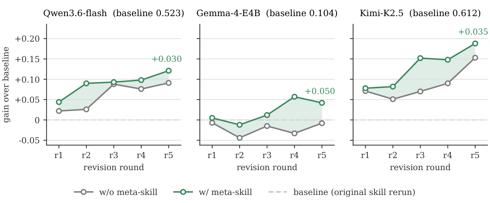

Figure 1 Skill benefit tracks base capability
The same skill library, seven executors. Click a tier region — weak, medium, or strong — to see what happens inside it, and hover any model for its exact numbers.
Figure 2 Skill adaptation in self-evolution
Five rounds of harness self-evolution: each round, the model revises its own skill from execution trajectories and verifier feedback, guided by the meta-skill. The panel below cycles through the five rounds automatically — hover to pause.
Figure 3 The benchmark: 103 skill-sensitive pairs
From 607 task–skill pairs across three benchmarks, we screen the 103 where skills matter most. Toggle the model-score chart between all tasks and the skill-sensitive suite; click a donut slice to browse that category's tasks (the donut always describes the 103 selected pairs).
Figure 4 Method overview
We construct the meta-skill from cross-task failure attribution over four recurring failure modes — instruction following, context management, tool execution, verification — and plug it into the execute → evaluate → rewrite loop of harness self-evolution.


The meta-skill beats both the original skill and a one-sentence rewrite instruction for all three weak executors (+5.1 to +14.1 points).

Three representative executors shown; across all seven — from Gemma-4-E4B to Kimi-K2.5 — the meta-skill ends the loop +2.0 to +5.1 points above the same loop without it.
Abstract
Harness self-evolution offers a practical route for LLM agents to improve from execution experience without updating model parameters. Its effectiveness depends on whether models can successfully act on the guidance provided by their harnesses. However, we find that harness benefits are not uniform across model capabilities: skills that improve stronger models can provide little benefit or even degrade performance for weaker ones. Across seven models and three benchmarks, we identify 103 task–skill pairs where skills improve GPT-5.6-luna by 31.1 points but degrade Gemma-4-E4B by 8.8 points. In 86% of failed weak-model runs, the violated requirement is already stated in the skill. This motivates skill adaptation: reformulating existing skills to match the executor's capabilities and make their guidance easier to execute. To achieve this, we diagnose failures in tool execution, context management, instruction following, and verification, and distill these diagnoses into a fixed meta-skill that guides adaptation during harness self-evolution. Guided by the meta-skill, a capable external rewriter, Kimi-K3, adapts skills without execution evidence, improving the three weak executors by 5.1–14.1 points over the original skills. We then incorporate this adaptation into a five-round self-evolution loop, where each model revises its own skill from execution trajectories and verifier feedback. Across seven executors, from Gemma-4-E4B to Kimi-K2.5, the meta-skill consistently improves final scores by 2.0–5.1 points over the same loop without the meta-skill. Our findings provide practical design guidance for developing more effective self-evolution methods.